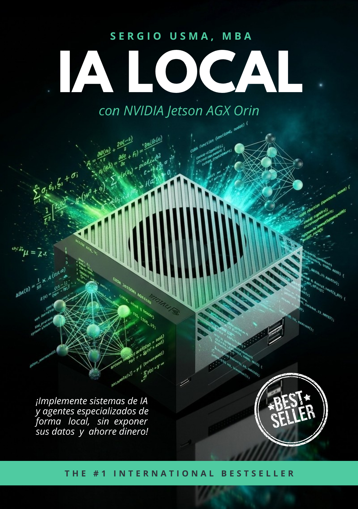

No solo gestiono proyectos; diseño la intersección entre la seguridad operativa, la inteligencia artificial y la sostenibilidad. El puente entre la operación en terreno — offshore, puertos, territorio — y la innovación digital: IA local, Edge Computing y SIG.
IA Generativa · Edge Computing · NVIDIA Jetson AGX Orin · MARPOL · DIMAR · OMI/STCW · ISO 45001 · Oil & Gas · Offshore · Formulación MGA · SECOP · Peritaje Marítimo · Hidrografía · Docencia Universitaria · Turismo Comunitario · USAID · ONU
Consultor estratégico con formación multidisciplinaria: mientras el sector marítimo y Oil & Gas exige rigor normativo (MARPOL, OMI, ISO 45001), la nueva era exige integración de datos e IA local (Edge Computing). Mi trayectoria en la Armada Nacional, la alta gerencia pública (Gobernación del Magdalena, INDETUR) y la academia internacional (España, EE. UU.) me permite traducir normativas complejas en soluciones tecnológicas y pedagógicas con impacto medible.
{{ xp.focus }}

Guía práctica para implementar Inteligencia Artificial Generativa de forma local y descentralizada — Edge Computing sin dependencia de la nube — para entornos industriales, marítimos y remotos: desde un puerto hasta la Sierra Nevada.
MBA (USA) · Máster (España) · Especialización (UNIR) · SST (UMNG) · Hidrografía (ESB) · Derecho (en curso)